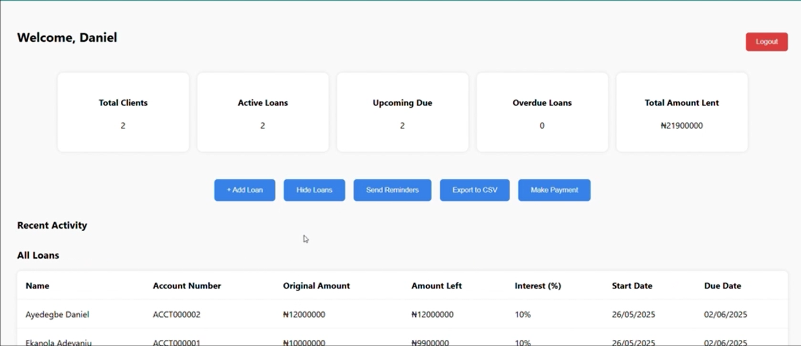
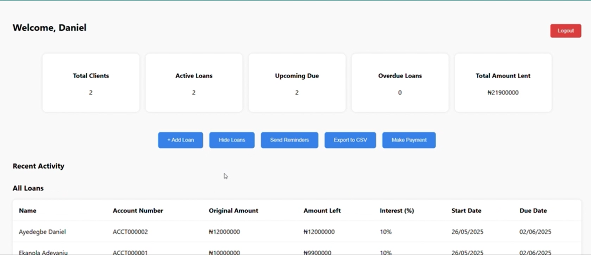
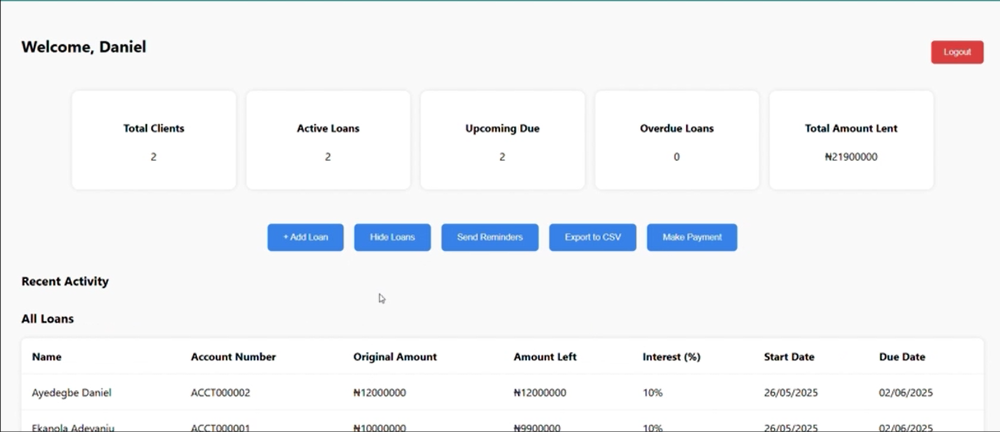

Hi, I’m Daniel — I like building things that work. Whether it’s a smart traffic system powered by solar panels or a backend API that manages real-world loans, I enjoy figuring out how all the pieces fit together. My background is in Mechatronics,
but I’ve spent the last few years getting deeper into software — especially building systems that connect to hardware or help people solve real problems.
Most of what I know, I learned by doing — breaking stuff, fixing it, improving it, and repeating that process. I like clean, well-organized code, systems that make sense, and working with people who care about what they build.
Mechatronics Projects
Automated Dispensing System
Microlitre fluid dispensing hardware for chemistry labs. Included 3D design, calibration, and test data collection.
Integrated mobile robot programmed via LabVIEW and equipped with sensors for obstacle detection. Modular design and real-time LabVIEW logic blocks enable smooth movement and collision avoidance.
Automation upgrades to improve precision in strip printing and resistance measurement.
Tech: Custom mechatronic design, sensors
Software Projects
Smart Home Automation System
Full-stack system using Flask and Raspberry Pi for automating household appliances based on real-time sensor data. REST API for dashboard control, supporting condition-based responses like fan activation and alerts.
Tech: Python, Flask, Raspberry Pi, HTML/CSS
Loan Management System
Backend tool for managing loans, sending automated email reminders, and exporting data via CSV and Google Sheets. Includes secure login, payment recording, and due-date tracking features.
Tech: Python, Flask, PostgreSQL, Flask-Mail, SMTP

Inventory Management API
RESTful API for maintaining inventory, with CRUD operations, Swagger documentation, and secure access control. Designed for scalable warehouse environments.
Tech: Flask, PostgreSQL, Docker, CI/CD
Expense Tracker (Full-Stack)
Secure web application for tracking and categorizing personal expenses with user authentication and data visualisation features.
Tech: Flask, JavaScript, CSS, Chart.js
Experience
Sava Technologies – Automation Engineer (London, UK) –
Built Python tools for analysing 10k+ real-time sensor data points per test run, improving fault detection by 25%. Developed embedded control logic and data pipelines for a microlitre-precision dispensing system deployed in ISO-8 conditions. Optimised hardware iterations using SolidWorks and FDM 3D printing.
Hoglet – Software Engineer / Co-Founder (Ibadan, Nigeria) –
Led development of a Flask-based MVP that helped 500+ users convert plastic waste into redeemable credits. Built and maintained a secure backend and payment system, processing 1,000+ transactions during pilot deployment.
British American Tobacco – Maintenance Engineer (Ibadan, Nigeria) –
Digitised 200+ machine parts, improving maintenance accuracy and reducing unplanned downtime by 12%. Applied SAP PM and Lean tools to optimise preventive maintenance workflows; reduced out-of-order incidents by 80%.
Automation Engineering Academy – Automation Engineer (Lagos, Nigeria) –
Designed and deployed 4 PLC-powered solar traffic systems, achieving >99% uptime in unstable grid areas. Delivered 5+ training sessions and reduced ongoing support needs by 50%.
Education
MSc – Mechatronics Engineering and Automation –
University of Strathclyde, UK (2023 – 2024). Dissertation: Smart energy forecasting using ARIMA and Fuzzy Logic. Focus: Embedded software, intelligent systems, data-driven automation.
B.Eng. – Mechatronics Engineering –
Afe Babalola University, Nigeria (2016 – 2020). Final Project: Designed a digital range-measuring and level-sensing system. Tools: Visual Basic, MATLAB, C, FluidSIM.


 
